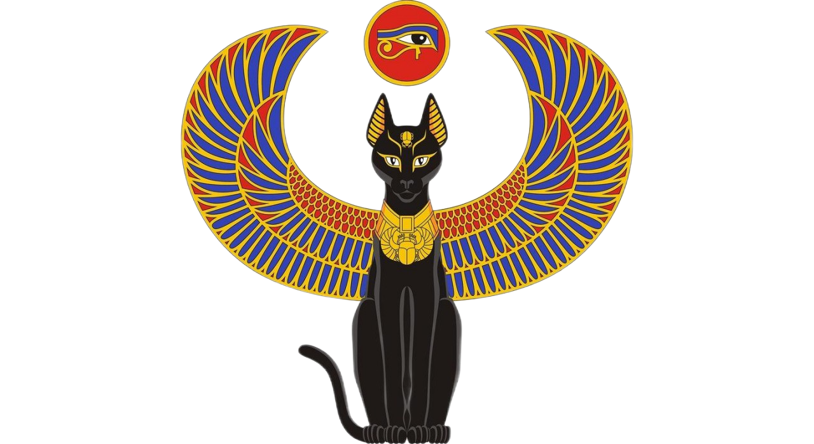

Коты-герои
Ниже представлены 4 истории о кошках-героях, которые призваны разрушить сложившиеся стереотипы о представителях семейства кошачьих.Именно благодаря храбрости домашних питомцев, были спасены человеческие жизни.
Кошачья история
Многие утверждают, что первыми кошек приручили и одомашнили древние египтяне, однако общего мнения на этот счет нет. Считается, что история появления кошек рядом с человеком начинается примерно 10-12 тысяч лет назад и связана с тем, что эти животные сблизились с людьми именно с тех пор, когда последние начали вести оседлый образ жизни. Это, кстати, делает кошек просто уникальными среди всех зверей, многие из которых до сих пор стараются держаться от людей подальше.
Много споров вызывает также история происхождения кошек, которая тоже весьма неоднозначна. Самое распространенное мнение, которое, кстати, особенно прижилось в России, заключается в том, что единым предком современных кошек является переднеазиатская североафриканская степная кошка, которая была одомашнена вовсе не в Египте, а в Нубии, и произошло это около 4 тысяч лет назад. Только после этого кошки попали в Египет, а затем появились и в Азии, где успешно скрестились с лесными бенгальскими видами.
Узнать еще...
Коты-герои
Ниже представлены 4 истории о кошках-героях, которые призваны разрушить сложившиеся стереотипы о представителях семейства кошачьих.Именно благодаря храбрости домашних питомцев, были спасены человеческие жизни.
Узнать еще...
Любимые занятия кошек
1) Спать. Это, пожалуй, любимое занятие всех кошек. Обычно они проводят во сне по 15-16 часов в день, а некоторые даже до 18 часов. Старайтесь не будить и не тревожить кошку, когда она спит, это вызывает у животного сильный стресс. Особенно, в раннем возрасте.
Узнать еще...